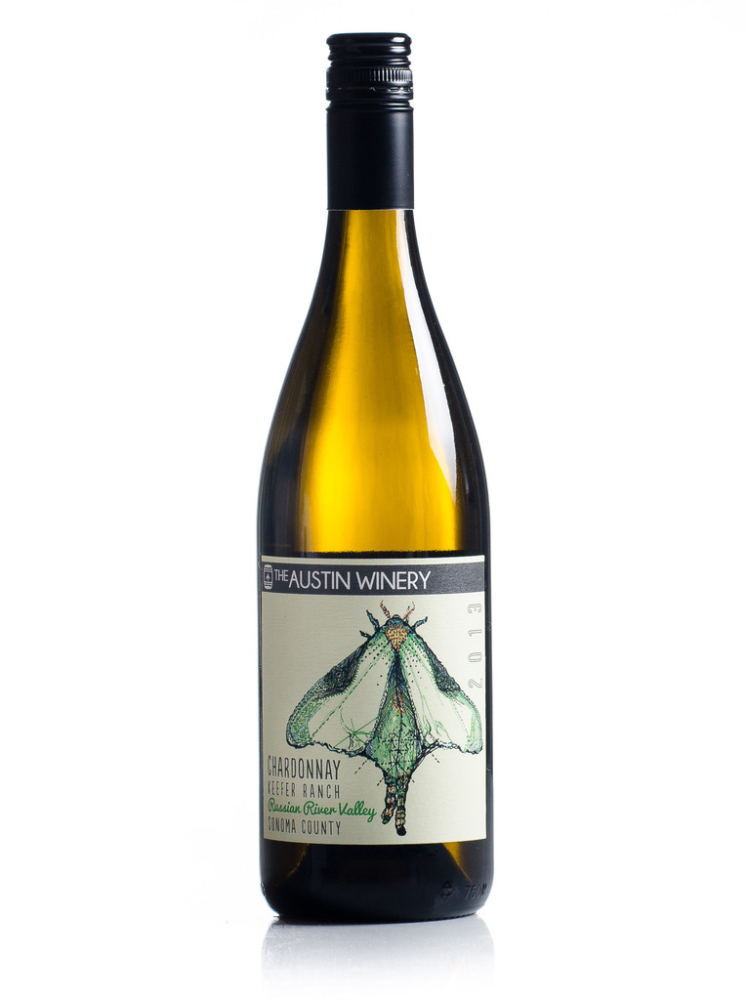

Best wine 2014
White wine is a wine whose color can be straw-yellow, yellow-green, or yellow-gold coloured. It is produced by the alcoholic fermentation of the non-colored pulp of grapes which may have a white or black skin. It is treated so as to maintain a yellow transparent color in the final product.The white grapes from which white wine is mainly produced are green or yellow of which there are many so that white wine can be produced anywhere that grapes can be grown. Some varieties are well-known such as the Chardonnay, Sauvignon, and Riesling. Others have a discrete existence hidden behind the name of a wine resulting from the assembly of several varieties. Tokay, Sherry, and Sauternes are examples of these. The winemaker can also use a variety with a coloured skin provided one is careful not to stain the wort during the separation of the pulp-juice. The Pinot noir, for example, is commonly used to produce champagne.